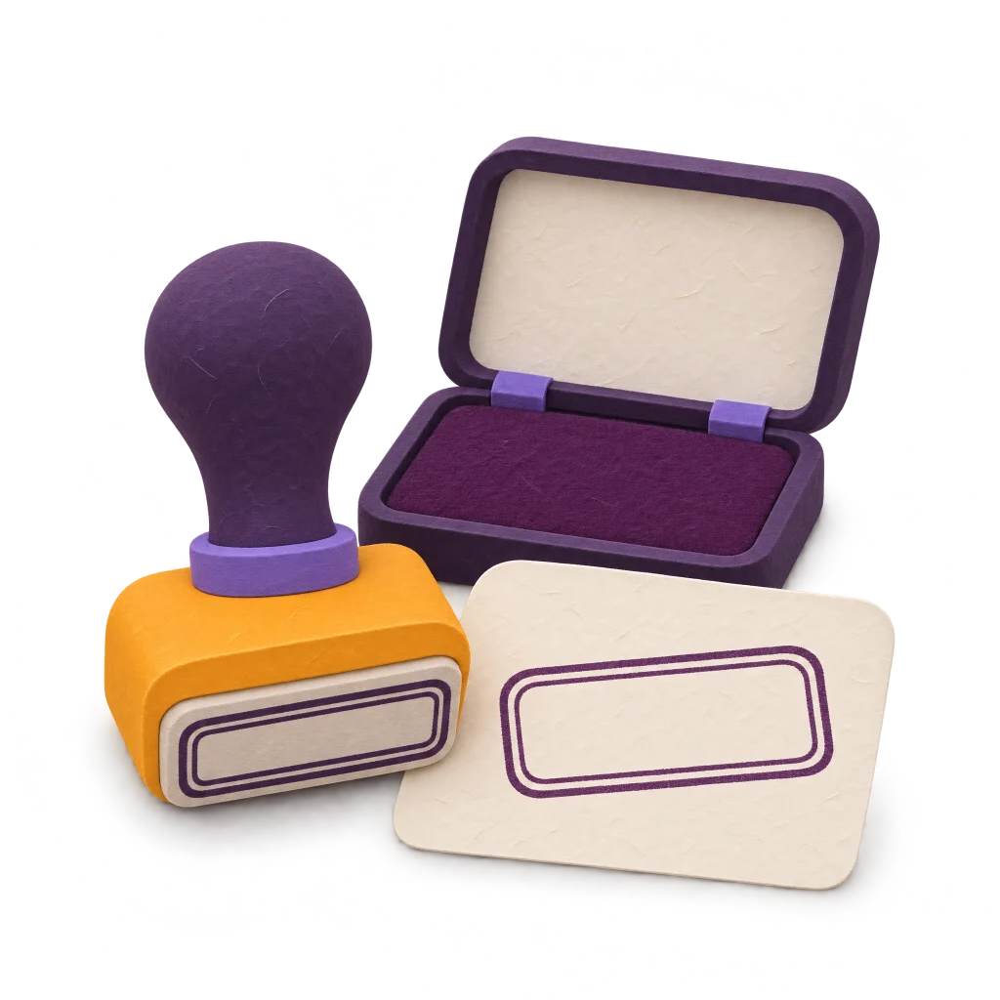
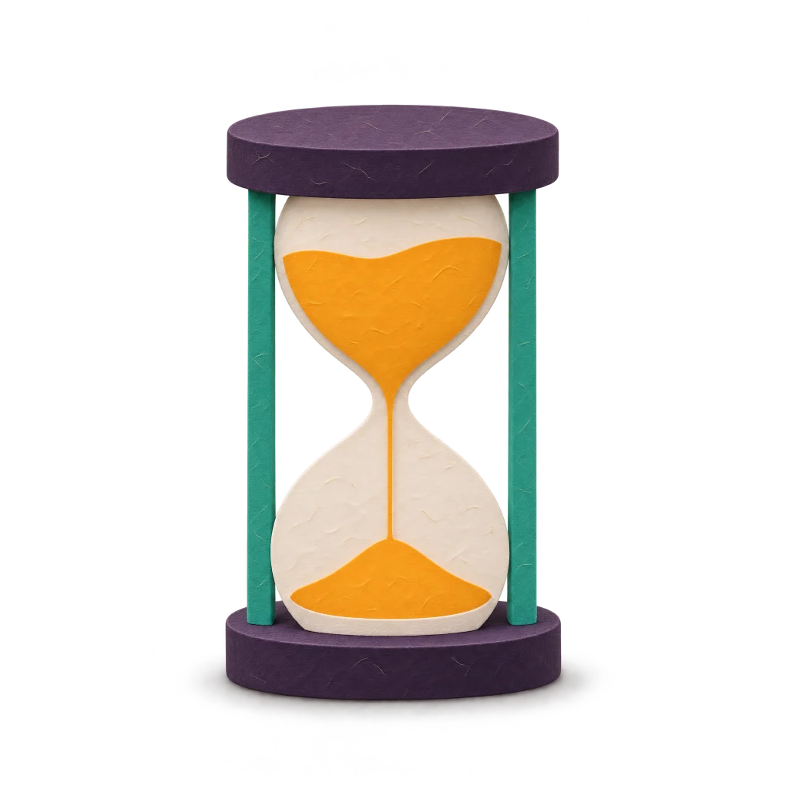
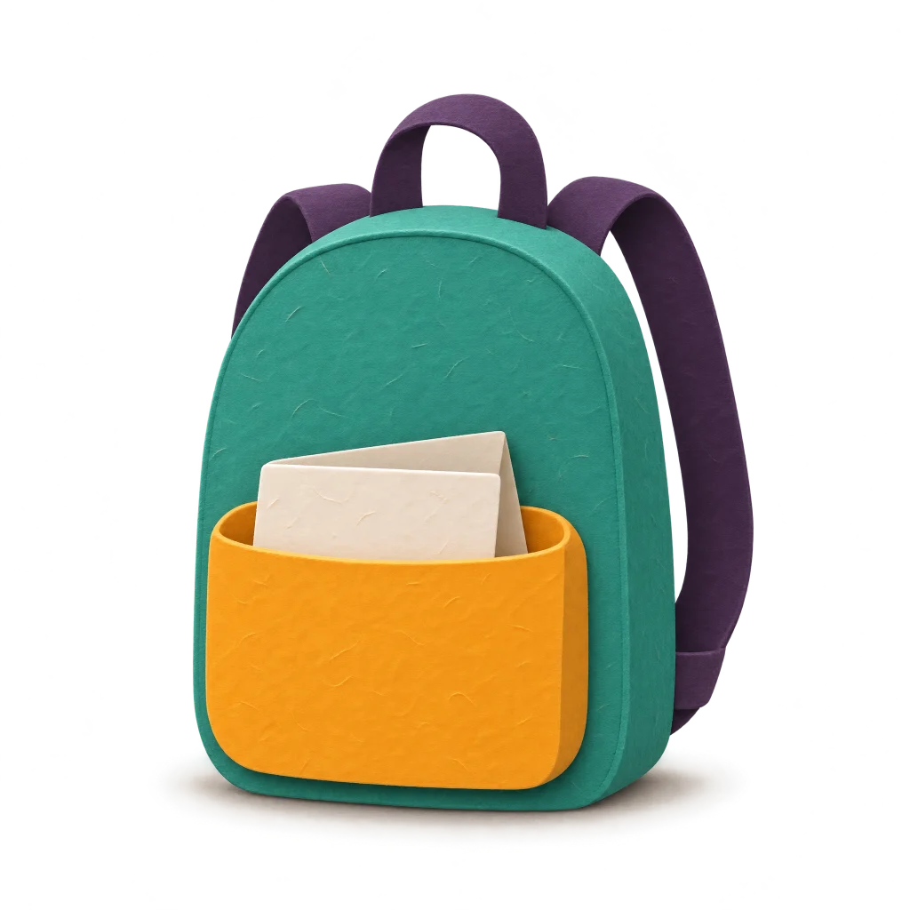

Movimento de papel
Estudo anterior. O movimento do produto agora segue o guache: veja Movimento. Tudo o que se mexe no Agora Sei, num lugar só: a resposta ao toque, as pequenas vitórias e o papel vivo. O movimento é de papel de verdade: bate, assenta, balança, vira. Nada pisca, nada quica e nada toca som.
Três famílias
| Família | Para quê | Quando acontece | Duração |
|---|---|---|---|
| Resposta ao toque | A pessoa sente que o app ouviu | Em todo toque | 120 a 180 ms |
| Pequenas vitórias | A tentativa fica marcada | Uma vez, no gesto | 300 a 640 ms |
| Papel vivo | A casa parece habitada | Em capa, espera e vazio. Nunca ao lado de texto para ler | Contínuo e lento, ou laço de 5 s |
- Estado que muda no próprio elemento usa transição. Não repete ao recarregar.
- Peça que entra por um gesto só anima com a classe
as-agora. - Nada segura o toque e nenhuma tela segue sozinha.
- Movimento reduzido no aparelho: o contínuo para, o resto aparece de uma vez, e o vídeo fica na imagem parada.
Papel vivo: objetos
Os dez objetos do universo têm fundo transparente. Com uma classe, ganham um movimento de papel. São só transform: leve e sem travar a tela.
Flutua
Para a capa e para a tela vazia. Sobe 6 px e gira 2 graus, em 3,6 s.

Ver como pedir
<img class="as-objeto as-mov-flutua" src=".../web/objeto-caixa-de-fichas.webp" alt="">Bate
O carimbo desce, amassa um pouco e volta. Uma vez, no gesto de registrar.

Ver como pedir
<div class="as-agora"><img class="as-objeto as-mov-bate" src=".../web/objeto-carimbo.webp" alt=""></div>Assenta
O selo de papel chega maior e torto e assenta. Para os três marcos, em tela cheia de marco ou em peça de mídia.

Ver como pedir
<div class="as-agora"><img class="as-objeto as-mov-assenta" src=".../web/objeto-selo.webp" alt=""></div>Vira
A ampulheta vira a cada 3 segundos. Só para espera de verdade, que hoje o app quase não tem.

Ver como pedir
<img class="as-objeto as-objeto--p as-mov-vira" src=".../web/objeto-ampulheta.webp" alt="">Balança
Como o que está pendurado: mochila, casaco, marcador. Gira 5 graus em 2,8 s.

Ver como pedir
<img class="as-objeto as-mov-balanca" src=".../web/objeto-mochila.webp" alt="">Parado
O padrão. Objeto ao lado de texto não se mexe.
Ver como pedir
<img class="as-objeto" src=".../web/objeto-livro-e-abajur.webp" alt="">Papel vivo: laços
Cinco cenas viraram laços de 5 segundos: o papel se mexe pouco, a câmera não, e o último quadro encontra o primeiro. Servem para landing, stories e abertura de vídeo. Dentro do app, só nas boas-vindas, e sempre com a imagem parada por baixo.
- Sempre
muted loop playsinline, composterna imagem parada epreload="none": o vídeo só baixa quando vai tocar. - Com movimento reduzido, o vídeo não toca: fica a imagem.
- Nunca dentro de um card nem ao lado de instrução: quem está lendo um passo não pode ter nada se mexendo ao lado.
- O arquivo de mídia, em 1080p, está em
movimento/mestres/; o da web, mais leve, emmovimento/.
Como pedir um laço novo
Modelo flux_3_video, 5 segundos, 1080p, sem áudio. A mesma imagem entra como primeiro e último quadro, e é isso que fecha o laço. 40 créditos cada.
medias: [{role: 'start_image', value: <job da imagem>}, {role: 'end_image', value: <job da imagem>}]
Stop-motion paper animation of this exact paper-craft scene. The camera is locked off, no camera movement, no zoom, no pan. Only gentle paper movement: <duas a quatro coisas que se mexem, e quanto>. <O que fica parado> stay perfectly still. Handmade stop-motion feel, paper pieces keep their exact shapes, textures and colors. Seamless loop: the final frame matches the first frame. No new objects, no people, no text.Pequenas vitórias
As peças que marcam a tentativa do adulto. Estão descritas na página Satisfação; aqui ficam juntas, para ver o conjunto.
Carimbo
300 ms.
Marco
Selo em 360 ms, papéis em 640 ms.
Três ideias diferentes
Com esta, vocês já tentaram três ideias com Lia.
Recado
Entra em 200 ms, sai em 150 ms.
Salvo para Lia
Opção
A marca salta em 180 ms.
Tempos e curvas
Todos os movimentos do app, com a classe que liga cada um.
| Movimento | Classe ou seletor | Duração | Curva | Repete |
|---|---|---|---|---|
| Peça afunda ao toque | .as-botao:active, .as-card:active, .as-opcao:active | 120 ms | --as-saida | a cada toque |
| Marca da opção salta | .as-opcao input:checked | 180 ms | --as-mola | ao marcar |
| Ícone salta ao salvar | .as-agora.as-botao .as-icone | 320 ms | --as-saida | no gesto |
| Recado entra e sai | .as-recado, .as-recado--saindo | 200 e 150 ms | --as-saida | no gesto |
| Folha sobe | dialog.as-folha | 420 ms | --as-saida | ao abrir |
| Carimbo bate | .as-agora .as-carimbo | 300 ms | --as-saida | no gesto |
| Selo assenta | .as-agora .as-selo, .as-mov-assenta | 360 ms | --as-saida | no marco |
| Papéis do marco | .as-marco.as-agora | 640 ms | --as-saida | no marco |
| Leque de fichas | .as-montando-ficha | 640 ms | --as-saida | no fim do quiz |
| Fichas da troca | .as-mini-ficha | 280 ms, 60 ms entre elas | --as-saida | ao trocar a resposta |
| Objeto bate | .as-agora .as-mov-bate | 620 ms | --as-saida | no gesto |
| Objeto flutua | .as-mov-flutua | 3,6 s | suave nos dois sentidos | contínuo |
| Objeto balança | .as-mov-balanca | 2,8 s | suave nos dois sentidos | contínuo |
| Objeto vira | .as-mov-vira | 3,2 s | entra e sai devagar | contínuo |